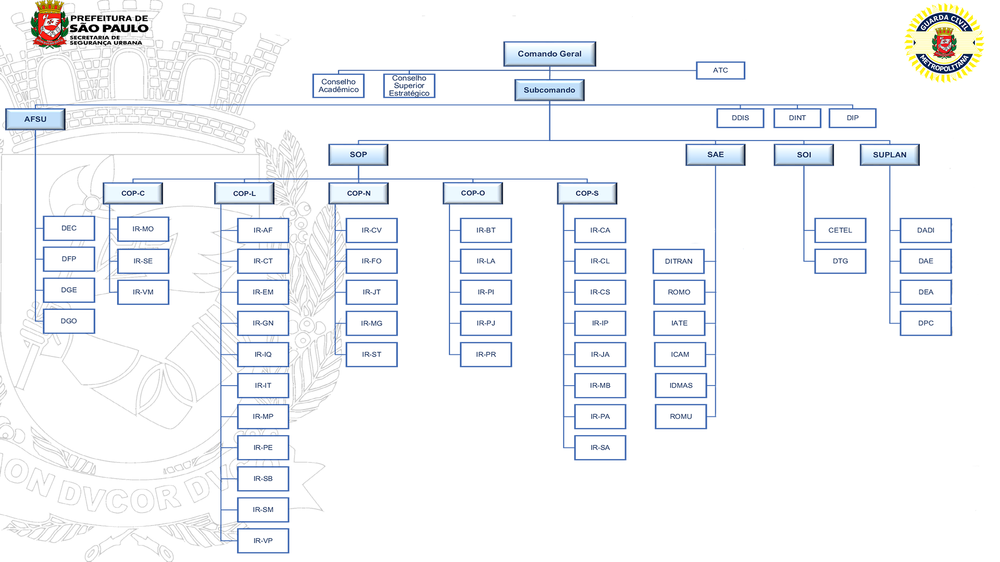
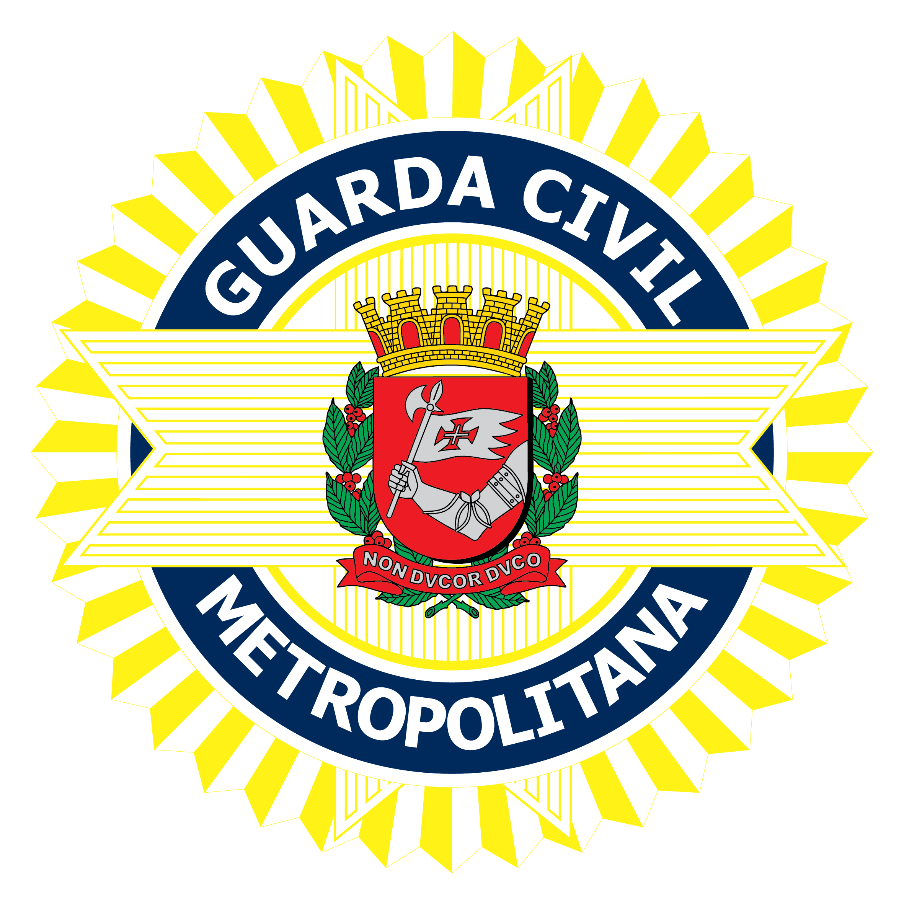

Organograma Institucional
Estrutura organizacional da Guarda Civil Metropolitana, composta pelo comando, setores administrativos e comandos operacionais.


Secretaria Municipal de Segurança Urbana
Estrutura organizacional da Guarda Civil Metropolitana, composta pelo comando, setores administrativos e comandos operacionais.
